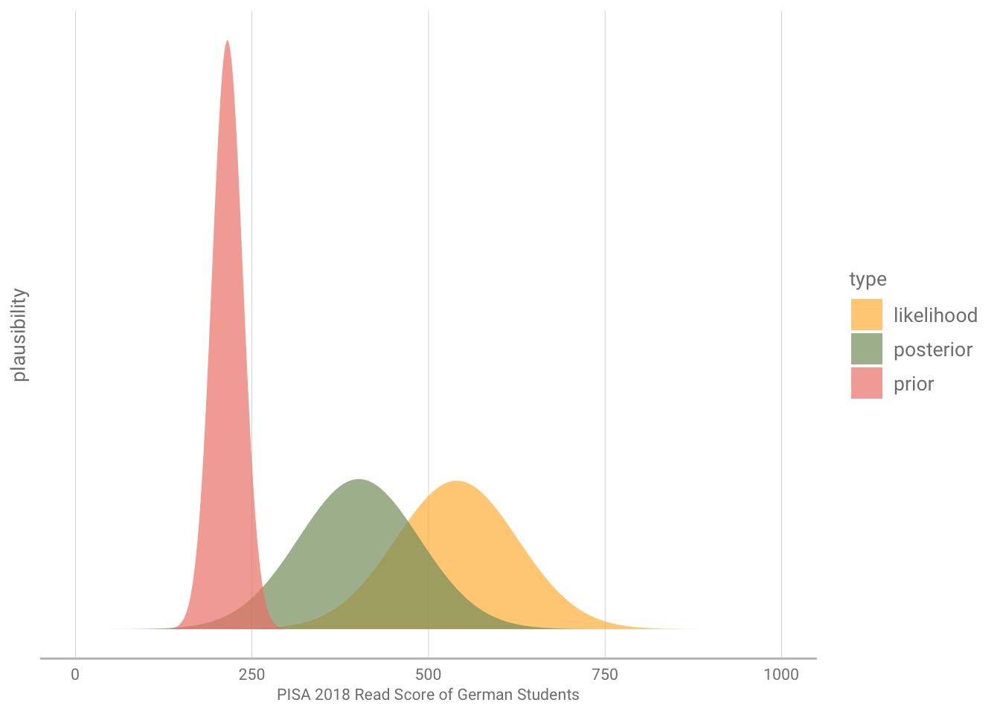

library(tidyverse)
library(brms)
library(tidybayes)
library(learningtower) # PISA 2018 data
pisa_raw <- load_student("2018")
pisa_ger <- pisa_raw %>%
filter(country %in% "DEU") %>%
select(read, math) %>%
slice_sample(n = 30)Intro to Baysian Modelling
R
Baysian
models
In this post I will Introduce Baysian modelling. We will model the relationship between reading scores and math scores by using the PISA data from 2018. You dont need to be familiar with bayesian statistics for this Tutorial. A basic understanding of linear regression should be enough.
Post Overview
In the first part of this Post, I will give a general introduction to the baysian approach to data anlysis with all its pros and downsides.
Afterwards we will take those concepts and apply them in order to build a linear regression that models the relationship between German students reading and math scores.
Those are contained in the PISA 2018 data, which we will access using the learningtower package. Although the 2022 data has just been released, there is yet no package that contains a subset of this data - for easier reproducebility we will therefore use the 2018 subset.
Tools
I will do the analysis using the tidyverse and brms, as well as tidybayes. brms is a great package for baysian moddelling that gives an interface similar to the one of lme4 (which is well known for its multilevel model capabilites). tidybayes allows us to visualise those models by using ggplot.
Before we can start, we need download the necessary data and packages. the pisa_raw data file contains the subset of the 2018 PISA data from learningtower. Using some dplyr verbs we reduce the data to one of the german students and slice a small sample of 30 students.
Thinking Baysian
Why did I opt for such a compact sample size? This is precisely where Bayesian models excel, and I’ll explain why.
Bayesians are not fans of point estimates. Rather, they find limited value in them, as they perceive the world replete with uncertainty. To them, choosing a specific point as your estimate suggests a stark dichotomy: you’re either spot on or significantly off the mark. But, if you consider a distribution of plausible values, your guess can be much more informed and nuanced.
This approach is especially useful in scenarios with small datasets. When data is sparse, making accurate predictions from a single value is often challenging.
Consider, for example, determining the average reading score of all German students based on our sample of just 30. Techniques like bootstrapping might help us better understand our sample’s distribution, but a significant caveat remains: our sample doesnt represent the pupulation. This might be caused through only sampling from a specific school district or just having an unrepresentative sample by chance. Therein lies the risk of being misled by such a limited dataset.
Bayesian Statistics allows us to adjust how much value we give to the data. By defining our prior assumptions we can decide how much we trust our data and incorperate prior knowledge and beliefs.
In the case of a the reading test scores we might be define a prior using a normal distribution. Why normal? - thats my assumption you could defenetly argue for another one. Maybe one with thicker tails as the tales of the normal distribution are really thin. But the normal distribution is really simple and can be fully described by the mean and standard deviation.
If we set a prior for the reading test scores we might know from the OECD Website that the scores tend to be centered around 500 with a standard deviation of 100.
Such a prior would look like this:
{width=300}m <- brm(read ~ 1,
prior = c(prior(normal(200, 20), class = Intercept),
prior(normal(20, 10), class = sigma)),
data = pisa_ger,
iter = 4000, warmup = 1000, chains = 4, cores = 4,
seed = 4,
sample_prior = TRUE)Running /Library/Frameworks/R.framework/Resources/bin/R CMD SHLIB foo.c
clang -arch arm64 -I"/Library/Frameworks/R.framework/Resources/include" -DNDEBUG -I"/Users/hendrikm/Library/R/arm64/4.2/library/Rcpp/include/" -I"/Library/Frameworks/R.framework/Versions/4.2-arm64/Resources/library/RcppEigen/include/" -I"/Library/Frameworks/R.framework/Versions/4.2-arm64/Resources/library/RcppEigen/include/unsupported" -I"/Library/Frameworks/R.framework/Versions/4.2-arm64/Resources/library/BH/include" -I"/Library/Frameworks/R.framework/Versions/4.2-arm64/Resources/library/StanHeaders/include/src/" -I"/Library/Frameworks/R.framework/Versions/4.2-arm64/Resources/library/StanHeaders/include/" -I"/Library/Frameworks/R.framework/Versions/4.2-arm64/Resources/library/RcppParallel/include/" -I"/Users/hendrikm/Library/R/arm64/4.2/library/rstan/include" -DEIGEN_NO_DEBUG -DBOOST_DISABLE_ASSERTS -DBOOST_PENDING_INTEGER_LOG2_HPP -DSTAN_THREADS -DUSE_STANC3 -DSTRICT_R_HEADERS -DBOOST_PHOENIX_NO_VARIADIC_EXPRESSION -DBOOST_NO_AUTO_PTR -include '/Library/Frameworks/R.framework/Versions/4.2-arm64/Resources/library/StanHeaders/include/stan/math/prim/fun/Eigen.hpp' -D_REENTRANT -DRCPP_PARALLEL_USE_TBB=1 -I/opt/R/arm64/include -fPIC -falign-functions=64 -Wall -g -O2 -c foo.c -o foo.o
In file included from <built-in>:1:
In file included from /Library/Frameworks/R.framework/Versions/4.2-arm64/Resources/library/StanHeaders/include/stan/math/prim/fun/Eigen.hpp:22:
In file included from /Library/Frameworks/R.framework/Versions/4.2-arm64/Resources/library/RcppEigen/include/Eigen/Dense:1:
In file included from /Library/Frameworks/R.framework/Versions/4.2-arm64/Resources/library/RcppEigen/include/Eigen/Core:88:
/Library/Frameworks/R.framework/Versions/4.2-arm64/Resources/library/RcppEigen/include/Eigen/src/Core/util/Macros.h:628:1: error: unknown type name 'namespace'
namespace Eigen {
^
/Library/Frameworks/R.framework/Versions/4.2-arm64/Resources/library/RcppEigen/include/Eigen/src/Core/util/Macros.h:628:16: error: expected ';' after top level declarator
namespace Eigen {
^
;
In file included from <built-in>:1:
In file included from /Library/Frameworks/R.framework/Versions/4.2-arm64/Resources/library/StanHeaders/include/stan/math/prim/fun/Eigen.hpp:22:
In file included from /Library/Frameworks/R.framework/Versions/4.2-arm64/Resources/library/RcppEigen/include/Eigen/Dense:1:
/Library/Frameworks/R.framework/Versions/4.2-arm64/Resources/library/RcppEigen/include/Eigen/Core:96:10: fatal error: 'complex' file not found
#include <complex>
^~~~~~~~~
3 errors generated.
make: *** [foo.o] Error 1draws_mcmc <- m %>%
spread_draws(b_Intercept, sigma, prior_sigma, prior_Intercept,
ndraws = 10)
tibble(grid = seq(0,900, by = .1),
prior = dnorm(grid,
median(draws_mcmc$prior_Intercept),
median(draws_mcmc$prior_sigma)),
likelihood = dnorm(grid, median(pisa_ger$read),
sd(pisa_ger$read)),
posterior = dnorm(grid,
median(draws_mcmc$b_Intercept),
median(draws_mcmc$sigma))
) %>%
pivot_longer(2:4, names_to = "type", values_to = "plausibility") %>%
mutate(type = as.factor(type)) %>%
# filter(type %in% c("prior", "likelihood", "posterior")) %>%
ggplot(aes(y = plausibility, x = grid, fill = type))+
geom_area(position = "identity", alpha = .7)+
xlab("PISA 2018 Read Score of German Students")+
xlim(0,1000)+
theme_minimal()+
theme(
strip.text.x = element_text(family = "Roboto", size = 10, face = "bold", color = "black"),
axis.line = element_line(colour = "#808080", linewidth = .3),
axis.text.x = element_text(family = "Roboto", size = 8, color = "#808080"),
axis.title.x = element_text(family = "Roboto", size = 8, color = "#808080"),
axis.text.y = element_blank(),
text = element_text(family = "Roboto", size = 10, color = "#808080"),
legend.title = element_text(family = "Roboto", size = 10, color = "#808080"),
legend.text = element_text(family = "Roboto", size = 10, color = "#808080"),
panel.grid.major.x = element_line(color = "#bfbfbf",
linewidth = .1),
panel.grid.minor.x = element_blank(),
panel.grid.minor.y = element_blank(),
panel.grid.major.y = element_blank(),
panel.background = element_blank(),
panel.border = element_blank(),
axis.line.x = element_line(size = .5, linetype = "solid", colour = "#bfbfbf"),
axis.line.y = element_blank()
)+
scale_fill_manual(values = c("prior" = "#ee8577",
"likelihood" = "#ffbb44",
"posterior" = "#859b6c"))